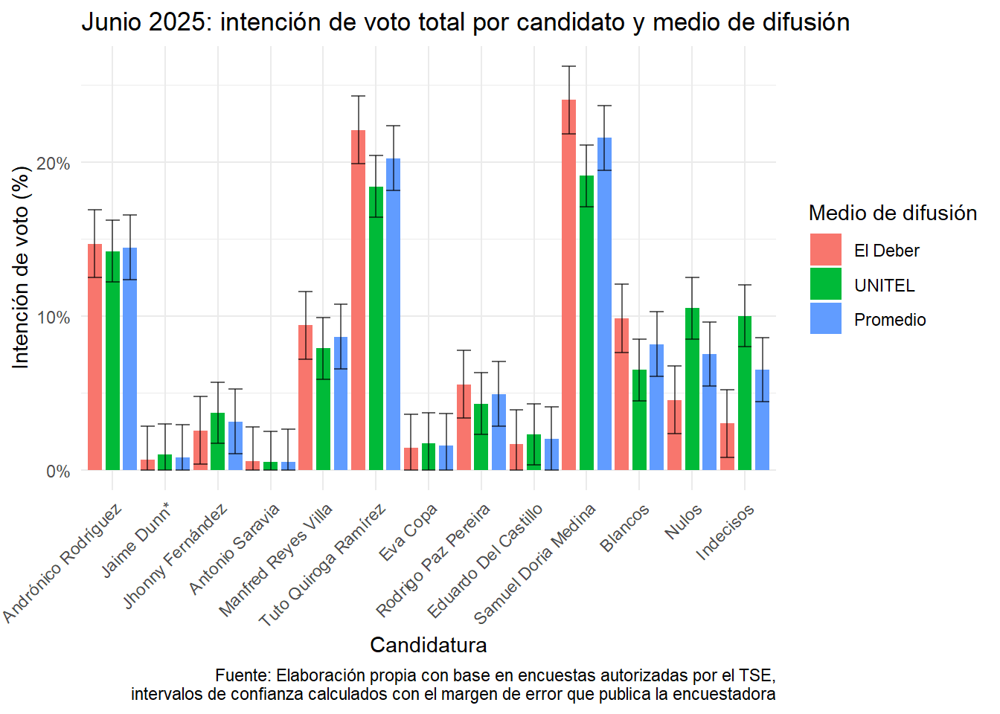
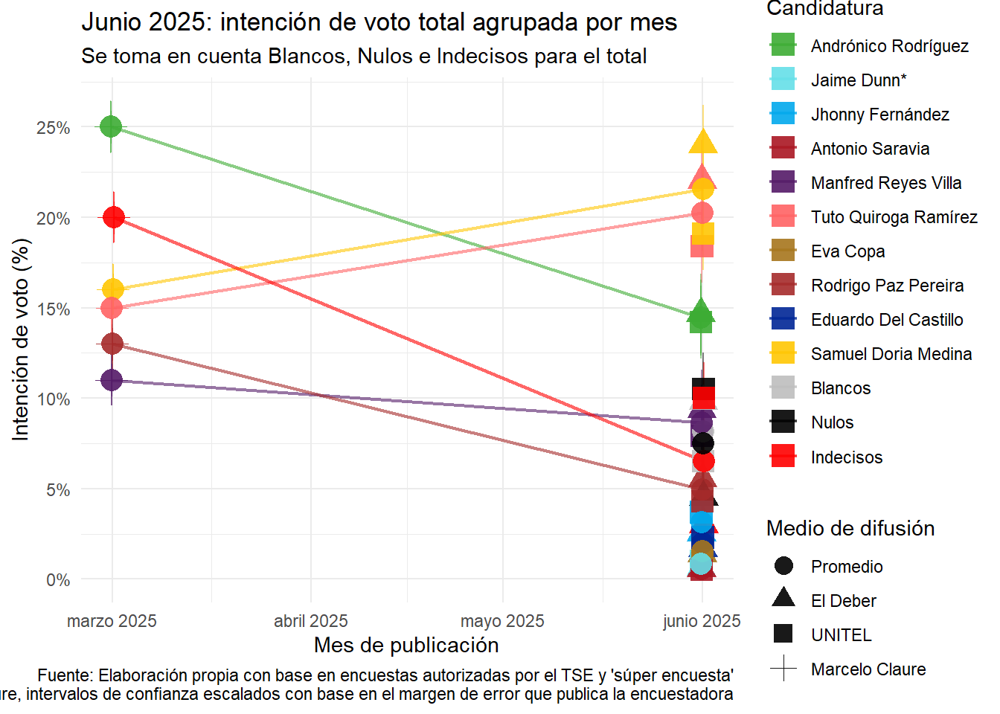
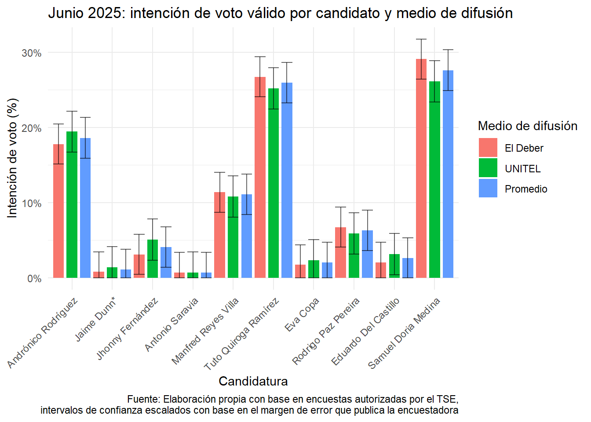
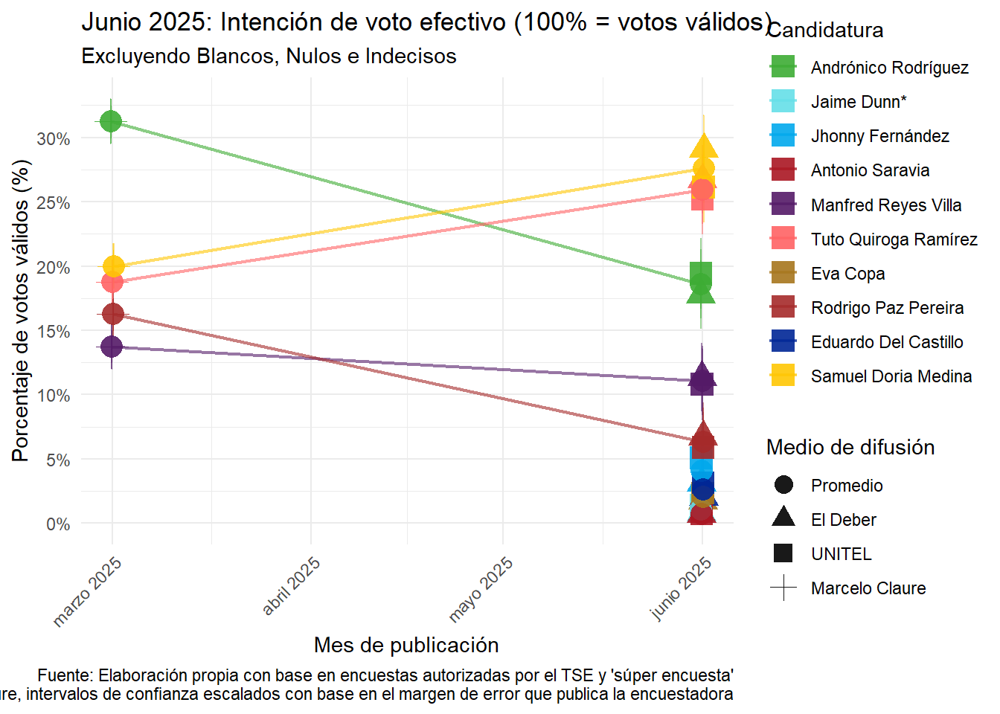

Encuesta de encuestas: Elecciones Generales Bolivia 2025
Última actualización: 27 de junio de 2025
Presentación
Este es un ejercicio de análisis electoral y visualización de datos inspirado en el trabajo de Político.mx, la idea es recopilar en una base de datos públicas las encuestas oficiales (y tal vez las no oficiales) para compararlas en el tiempo. La base de datos se encuentra en este archivo de sheets y el diccionario de datos en este otro
Si quieres saber quién soy yo, puedes consultar mi linkedIn aquí.
Gráficos de votos totales
La intención de voto total toma en cuenta a los votos blancos, nulos e indecisos, estos tres representan ahora mismo entre 17 y 27 puntos porcentuales. Para referencia, en la elección de 2020 los blancos y nulos alcanzaron apenas 5% de los votos emitidos, en el proceso electoral de 2019 su proporción fue similar, mientras que en las elecciones generales de 2014 estuvieron cerca del 5.8%.
Los variaciones más grandes entre las encuestas están justamente entre los votos blancos, nulos e indecisos, lo que habla de la volatilidad de este grupo. Si damos por bueno que en la recta final existirán alrededor de 5% de votos nulos y blancos, se puede concluir que, en promedio (17% + 27%)/2 - 5% nulos-blancos) = 17% del electorado emitirá un voto válido el día de la elección, pero que todavía no se ha decantado por ninguna candidatura. Un contexto de crisis e incertidumbre probablemente retrase esta decisión hasta el último momento, a menos que exista un suceso canónico que permita al elector definirse por una sigla, o al menos, descartar otras.

Si observamos los intervalos de confianza y damos por buena el diseño y levantamiento de las encuestas, hay pocas diferencias estadísticamente significativas entre los hallazgos que presentan los medios de comunicación -y las empresas-consultoras encargadas del levantamiento y análisis, La excepción son las estimaciones para los votos indecisos, nulos y los resultados de UNIDAD (Samuel Doria Medina), a quien El Deber sitúa en el primer lugar con cerca del 25%. Si bien UNITEL también declara ganador a Samuel, lo hace con 5% menos, y con una diferencia casi nula con el segundo lugar, ocupado por Tuto Quiroga (LIBRE).
Si hablamos de las diferencias entre los primeros y segundos lugares, estas no son estadísticamente significativas en ningún caso. El tercer lugar lo ocupa Andrónico Rodríguez (Alianza Popular). Según UNITEL, el presidente del senado se encuentra relativamente cerca de Tuto -alrededor de 4.2 puntos y a casi 5 puntos de Samuel, pero El Deber lo posiciona a más de 7 puntos del segundo lugar y casi 10 puntos del primero. Este margen tan amplio no deja dudas a que alguna de las consultoras está errada, de cualquier manera, podemos darles el beneficio de la duda en tanto que sus levantamientos tuvieron un par de semanas de diferencia: la empresa consultora de UNITEL, IPSOS-CIESMORI realizó su investigación de campo durante la última semana de mayo, mientras que su contraparte SPIE Consulting para El Deber, la llevó a cabo la segunda semana de junio.
Teniendo en cuenta que probablemente las candidaturas con las campañas más organizadas y con más recursos hasta el momento (Samuel y Tuto) son las que están liderando la intención de voto, parece ser que el electorado premia a quienes están haciendo su tarea como candidatos. Tal vez la excepción a la regla es Manfred Reyes Villa, quien a pesar de estar movilizando aparato, recursos y visitando medios de comunicación constantemente, parece no poder proyectarse a nivel nacional. Posteriormente (y en función de mi tiempo disponible) intentaré desagregar el análisis al menos a nivel regional, pues las encuestas observadas presentan errores de estimación muy altos a nivel subnacional, en especial en los departamentos menos poblados.
Sobra decir que la inestabilidad política, la improvisación de los partidos políticos, la judicialización de la elección y la endeble respuesta del Tribunal Supremo Electoral no han permitido que las campañas despeguen. Muchos de los partidos inician oficialmente sus camapañas este fin de semana (28 de junio). Según el calendario electoral, los partidos pueden presentar sustitutos hasta 45 días antes de la elección en caso de que los candidatos renuncien, esto es, hasta el viernes 4 de julio. En otras palabras, no será hasta esa fecha que se cierren las negociaciones políticas y podamos conocer a las candidaturas “firmes”. Después de ese día, las únicas sustituciones de candidaturas podrán ser por causa de inhabilitación, fallecimiento o incapacidad total.
Gráficos de votos válidos
Finalmente, se presenta el ejercicio con el voto efectivo, aunque este debe ser tomado con precaución, dado el altísimo porcentaje de indecisos, nulos y blancos, que pueden fluctuar mucho entre hoy y el día de la elección.

Las tendencias siguen el mismo camino de la votación total, el único objetivo de estas visualizaciones es observar si alguna candidatura se acerca al ansiado 50% + 1 voto que permite una victoria en primera vuelta. Pero ninguno alcanza siquiera el 30%

En la virtual situación de que la elección fuera este fin de semana y que los indecisos no tomen partido alguno, la segunda vuelta sería contendida por Samuel Doria Medina y Tuto Quiroga Ramírez.